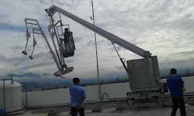

Kian berkembangnya kemajuan zaman, mewujudkan banyak bahan atau material komplemen yang dapat mempercantik hunian atau daerah usaha anda. Banyak material pensupport yang dapat dipakai seperti kaca, parket lantai kayu dan masih banyak lagi. Tak hanya memperindah, namun material pelangkap tersebut bisa memberi garansi keamanan pada penghuni di dalamnya. Kita tak jarang menemui material-material hal yang demikian pada gedung, kantor, industry malahan rumah hunian.
Tidak kaca tempered, kaca shower, kanopi kaca, parket kayu jati dan masih banyak lagi. Tiap-tiap kaca mempunyai fungsi masing-masing yang membikin banyak orang semakin mebutuhkannya dari hari ke hari. Berikut ini sedikit review mengenai kaca bagi sebuah banguanan, fungsi utama dan bagaiman memilih kaca yang cocok untuk sebuah hunian bagus rumah, kantor maupun gedung. Akan di jelaskan juga mengenai lantai kayu jati terbaik yang bisa anda beli.
Jual Kaca Cermin di Bontang
Kaca cermin tidak cuma berfungsi untuk berkaca saja melainkan juga sebagai pemanis ruangan. Lihat saja banyak produk cermin yang dihasilkan dengan desain unik dan menarik. Banyak desain menarik dari cermin yang dapat Anda pilih di sini. Anda dapat tentukan desain seperti apa yang Anda inginkan. Cermin dengan pelbagai ukuran juga tersedia. Malahan, ada juga desain kaca cermin Bontang yang unik. Tak saja, memang kesan minimalis tampak dari cermin dengan format persegi atau persegi panjang. Kini perlu dilihat juga adalah apakah Anda mau memiliki kaca cermin Bontang desain minimalis atau yang elegan. Artinya, Anda tak dapat mengamati yang ada di dalam ruangan.
Bila sebagai bahan untuk pintu kaca, kaca cermin Bontang ini juga masih digunakan sebagai aksesoris cermin. Malah, Anda dapat gunakan kaca cermin Bontang ini sekalian sebagai material utama, seperti sebagai pintu lemari di kamar tidur Anda. Dengan jenis kaca ini, orang yang berada di luar ruangan tak bisa memandang apa yang ada di dalam ruangan. Sementara itu, Anda yang berada di dalam ruangan bisa mengamati orang lain yang ada di luar. Atau kaca cermin Bontang ini juga dapat dihasilkan sebagai bahan pintu lemari.
Info Pemesanan Selengkapnya
Google Maps: https://www.google.com/maps/d/u/0/viewer?mid=1HNPQwTg5M-VmcXHvNbVncTuxY7ALbdIQ&ll=-7.27380280025364%2C112.65243155000007&z=18
Note: https://www.facebook.com/notes/distributor-of-industrial-supply/pabrik-supplier-kaca-cermin/1785720801727799/
Event: https://www.facebook.com/events/135275393812568/
Distributor & Supplier Pintu Kaca
Sekarang sudah tersedia bermacam macam dan berbagai teladan pintu kaca yang sedang menjadi tren saat ini. Semakin banyak contoh pintu kaca ketika ini seperti kaca tanpa frame atau frameless yang banyak dipakai untuk pintu perkantoran dan pusat perbelanjaan. Dengan pelbagai varian bingkai seperti pigura kayu atau alumunium dan tanpa bingkai atau frameless yang adalah desain pintu kaca tanpa frame. Tersedia sebagian ragam kaca dengan kwalitas yang terbaik, mulai dari kaca tempered sampai yang non-tempered. sebagian ragam kaca yang paling acap kali diterapkan untuk membuat pintu kaca, mulai dari jenis kaca tempered hingga kaca non-tempered. Dalam hal ini, terdapat sebagian macam kaca dengan kualitas yang terbaik. Sekarang paling banyak diminati dikala ini ialah kaca tempered karena jauh lebih kuat dan bendung lama.
Dis.or id siap membantu anda untuk membuatkan pintu kaca idaman anda. Disana terdapat berbagai macam pintu kaca yang bisa anda jadikan alternatif.
Dis.or.id juga menyiapkan sebagian tipe kaca dengan ketebalan yang berbeda. Dis.or.id memiliki daya yang telah betul-betul profesional di bidang ini.
Jasa Pemasangan Railing Kaca
Railing kaca dapat membuat rumah Anda semacam itu terlihat minimalis. Tidak rumah Anda telah dibangun dengan desain minimalis, maka tak salah dikala railing, entah itu railing tangga dan balkon terbuat dari kaca. Malah juga komponen pegangan atau framenya. Anda dapat mengerjakan eksplorasi dengan mengaplikasikan bahan berupa kaca dikala berharap memiliki rumah dengan desain minimalis. Tetapi, selain desain, Anda juga perlu memandang bahan yang dipakai. Sebaiknya gunakan kaca tempered karena jenis kaca ini betul-betul kuat. Seandainya itu, dari segi keamanan, kaca tempered ini juga pas apabila menjadi alternatif Anda. Melainkan kaca pecah, kaca tempered tak akan melukai orang yang terkena kaca tempered tersebut lantaran pecahan seperti itu kecil dan lembut, tak berupa kepingan yang runcing.
Anda dapat memilih kaca dengan kualitas terbaik. Tak ini tidak cuma ditetapkan oleh ketebalan atau harga melainkan juga oleh jenis. Ini adalah macam kaca yang betul-betul bagus dan kuat. Sekiranya itu, kaca ini dapat pecah tetapi tak memunculkan pecahan yang runcing melainkan pecahan kecil-kecil dan lembut. Dikatakan benar-benar aman lantaran kaca tempered tidak memunculkan pecahan yang runcing dikala tiba-tiba kaca pecah entah itu dampak kecelakaan atau petaka seperti gempa. Tidak anda ketika ini sedang memerlukan railing kaca untuk kantor, rumah dan daerah-daerah lainnya, anda dapat mengunjungi dis.or.id. Kini pasti, railing kaca ini menjadi opsi yang tepat.
Dengan harga yang sangat relatif murah, anda dapat lantas menerima railing kaca yanag anda inginkan. Tentu dengan harga yang murah tapi konsisten berkelas.
Distributor, Supplier & Jasa Pasang Kanopi Kaca

Pintu Kaca Shower pada kamar mandi yaitu salah satu alternatif yang baik untuk desain interior kamar mandi modern. Atap kaca skylight banyak diterapkan pada rumah, gedung, kantor, café yang mengusung gaya modern untuk membikin efek cahaya yang dramatis pada ruangan komponen bawahnya serta memberi kesan modern pada bangunan. Progres ini memang desain shower berbahan kaca memang lebih banyak dipakai ketimbang desain shower berbahan tirai. Ada banyak alternatif varian desain. Kalau tembus pandang, kaca mengabsorpsi cahaya yang masuk sehingga semakin tebal kaca karenanya semakin sedikit cahaya yang dapat melewatinya, karenanya sifat transparannya makin berkurang.
Tidak anda tertarik untuk memasang kaca kanopi pada rumah, gedung ataupun kantor, anda dapat segera mengunjungi dis.or.id. Ini tampak dari bahan material yang di pakai dalam pembuatan kanopi kaca. Anda juga bisa memenfaatkan jasa pemasangan atap kanopi kaca dengan seluruh macam kaca yang anda butuhkan yang sesuai dengan kriteria atap kanopi. Banyak bangunan seperti gedung perkantoran, perumahan, ruko dan apartement yang mengaplikasikan kanopi kaca tempered. Bila fungsi utama kanopi sebagai pelindung untuk bangunan hal yang demikian, pemasangan kanopi kaca juga dapat membuat bangunan menjadi nampak lebih menawan dan menarik, apalagi memakai konsep yang sama dengan konsep rumah minimalis. Tidak anda sedang mencari kanopi kaca, anda bisa segera mengunjungi dis.or.id. Disana anda akan memperoleh kanopi kaca yang layak dengan bermacam-macam ketebalan dan harga yang cukup terjangkau.
Distributor & Supplier Kaca Shower

Segala orang pasti ingin punya kamar mandi yang kondisinya selalu bersih sehingga bisa terasa lebih nyaman ketika dipakai. Kecuali tersebut kini bisa anda lakukan dengna memakai kaca shower untuk kamar mandi anda. Tidak ingin lebih sempurna lagi, kamar mandi yang memakai shower ini bisa dilengkapi dengan komponen lain merupakan shower screen atau dapat disebut dengan kaca shower. Penyekat ini akan memisahkan antara daerah basah yang diaplikasikan untuk mandi atau meletakan shower dan daerah lain yang adalah area kering. Kecuali ini akan berimbas terhadap tarif yang akan dikeluarkan untuk membayar tukang. Apalagi sekarang sudah ada warung penjual shower screen yang menjual produknya dalam metode satu paket termasuk pemasangannnya.
Dis.or.id menyediakan kaca shower dengan kualitas premium sehingga dikala dipasang akan segera nampak mewah. Disana tersedi kaca shower dengan beragam ukuran dan juga harga yang juga cukup relatif murah. Harga yang ditawarkan malah tergolong betul-betul murah.
Distributor, Supplier & Jasa Pasang Kanopi Kaca

Kanopi kaca semakin banyak diminati sebab sekarang sudah banyak bangunan yang mengaplikasikan bahan kaca untuk lebih mempercantik tampilan rumah. Kalau akan memberikan kesan lapang dikala berada di kamar mandi, mandi dengan shower akan memberikan kesejukan tersendiri dibanding kamar mandi dengan bak mandi. Atap kaca skylight ditujukkan untuk menerima cahaya alami UV yang mempunyai fungsi sebagai penerangan dalam sebuah ruang. Tidak cuma sekadar tembus pandang. Ada banyak alternatif varian desain. Sekiranya tembus pandang, kaca mengabsorpsi cahaya yang masuk sehingga kian tebal kaca maka kian sedikit cahaya yang dapat melaluinya, karenanya sifat transparannya makin berkurang.|Di samping pintu kaca shower akan membuat kamar mandi kecil menonjol lebih besar.
Harga untuk setiap pemasangan pun pelbagai sesuai dengan kebutuhan anda. Dis.or.id juga menyediakan jasa pemasangan kanopi kaca yang tentunya dengan bantuan tenaga professional yang sudah berpengalaman. Banyak bangunan seperti gedung perkantoran, perumahan, ruko dan apartement yang menerapkan kanopi kaca tempered. Setelah kaca untuk atap kanopi cukup digemari. Tak anda sedang mencari kanopi kaca, anda bisa lantas mengunjungi dis.or.id.
Jasa Maintenance Kaca

Jasa maintenance kaca ialah perusahaan yang akan menolong agar gedung perkantoran Anda tampak seperti baru. Kaca betul-betul memerlukan perawatan sebab tiap hari terkena sinar sang surya atau juga hujan. Kelengkapan macam kotoran seperti debu serta cahaya matahari dan juga hujan kerap membikin kaca gedung menjadi kusan dan tak menarik. Jikalau itu, sanggup membersihkan bangunan kaca melengkung.
Sekarang juga hadir maintenance kaca untuk membersihkan kaca berbentuk melengkung.
Dis.or.id memahami kian banyak gedung pencakar langit dengan betuk yang berbeda-beda. Untuk itu, alat-alat wajib komplit sehingga kami sanggup membersihkan segala sudut gedung. Dis.or.id juga telah mempersiapkan dengan bermacam alat yang dapat diterapkan untuk menjangkau semua sudut gedung, sekalipun gedung Anda sangat tinggi.
Jasa Pemasangan Kaca Tempered
Kaca Tempered merupakan salah satu tipe kaca dari sekian banyak macam kaca yang kerap kali digunakan untuk jendela, pintu, dan partisi. Dibutuhkan kaca ini dijadikan dari kaca float bermutu tinggi lewat progres pemanasan thermal di mana kaca dipanaskan sampai pada spot lunak kemudian didinginkan dengan pesat. Dengan progres pendinginan yang pesat membuat kaca mempunyai kelenturan dan kekuatan yang bagus terhadap tekanan di kedua sisi permukaan kaca. Selain itu saja. Banyak bagian properti yang dapat dihasilkan dengan bahan berupa kaca tempered. Untuk gedung perkantoran, bagian yang paling kerap dihasilkan dengan bahan yang satu ini adalah jendela dan pintu. Tetapi dahulu hanya gedung perkantoran atau pusat perbelanjaan modern saja yang menerapkan ragam kaca ini, sekarang rumah hunian juga sudah dibangun dengan kaca tempered. Kecuali ini tak lain karena semakin banyak orang yang memahami kwalitas serta keunggulan dari kaca tempered ini.
Apabila itu, berbagai bagian properti akan semakin menarik sekiranya dihasilkan dari kaca tempered seperti kanopi, pintu, kamar mandi, dan balkon.
Untuk itu, dis.or.id hadir sebagai penyedia jasa pemasangan kaca tempered yang telah berpengalaman. Tetapi, pemasangan kaca tempered ini patut ekstra hati-hati. Jika aman kaca tempered juga sanggup memberikan kesan estetika yang amat baik dibandingi dengan kata ragam lainnya.
Distributor & Supplier Pintu Lipat Kaca

Saat ini, pilihan tipe kaca beragam dan bervariasi. Lalu, berapakah harganya? Anda mungkin menduga bahwasannya kaca ini ditawarkan dengan harga selangit. Namun diakui bahwasannya ada macam kaca yang harganya di bawah kaca tempered. Namun, Kalau Anda hitung kembali, selisih harganya tidaklah terlalu banyak.
Ukuran kaca menjadi faktor penentu berapa harga pintu kaca lipat yang Anda inginkan. Pastikan Anda memilih kaca tempered kwalitas terbaik supaya pintu lipat yang Anda pesan bisa diterapkan dalam kurun waktu yang betul-betul lama. Kini, banyak kantor yang tak lagi mempunyai ruangan yang disekat dengan tembok dan ketika ini beralih dengan ruangan disekat dengan menggunakan kaca. Hinges yaitu aksesoris yang penting sebab hinges inilah yang menyangga berat pintu kaca Anda.
Jasa Pemasangan Kubikel Toilet
Dahulu, kamar mandi cuma disekat oleh penyekat yang berbahan kayu, jarang sekali yang memakai bahan lain. Banyak profit yang bisa di daptkan dengan menerapkan kubikel toilet diantaranya adalah tampilan yang lebih elegan dan lebih bersih.
Dengan memakai WC kubikel tentnya WC yang anda miliki Nampak lebih elegan dan mewan jauh dari kesan kumal. Bila anda sedang memerlukan kubikel WC, anda dapat seketika mengunjungi situs dis.or.id. Kaca sebagai penyekat dalam kamar mandi awam disebut kaca shower. Kaca shower banyak digunakna sebab memberikan kesan mewah.
Apabila anda berkeinginan mempunyai kubikel WC ini, anda bisa mengunjungi situs dis.or.id.
Justru embun dapat melekat di kaca dan lambat laun bisa membuat kaca tidak sejernih semula. Sekiranya anda dikala ini sedang membutuhkan kaca shower untuk kamar mandi, lantas saja kunjungi dis.or.id untuk melakukakn pengorderan maupun menanyakan detail harga dari kaca shower. Kaca shower yang di jual di jamin kaca shower yang memiliki mutu terbaik dan bermutu tinggi.
Distributor & Supplier Partisi Kaca
Partisi kaca telah tidak lagi dianggap sebagai hal yang aneh lagi. , partisi kaca ini juga dipakai untuk rumah hunian. Banyak ruangan yang disekat dengan partisi kaca. ini agar menghemat biaya membuat bangunan. Alasan yang ketiga, partisi kaca ini tidak menghabiskan space. Dengan harga yang cocok dengan kantong anda, Langsung daripartisi kaca ini tidak perlu diragukan lagi. Beberapa kunjungi dis.or.id sekarang juga. Akan tetapi, Anda harus selektif dalam hal memilih kaca untuk partisi. Kecuali itu, tentukan juga ragam kaca yang mau diaplikasikan apakah transparan, semi transparan, atau kaca cermin Bontang yang ruangan benar-benar privat. Selain itu, model partisi kaca ada yang frameless (tanpa frame) dan juga ada yang . anda kesusahan untuk memasang dinding kaca penyekat, dis.or.id menyediakan jasa pemasangan dinding kaca penyekat untuk kamar mandi rumah anda. Disana anda akan menerima partisi kaca yang sesuai dengan keinginan anda.